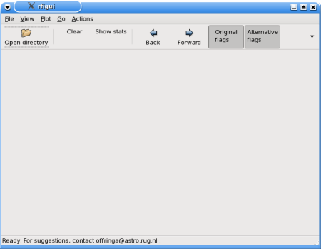
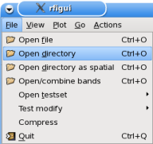
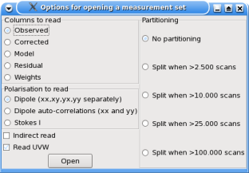
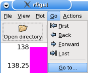
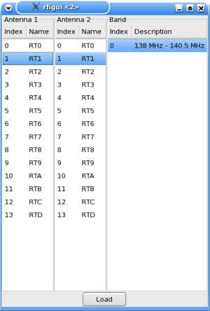
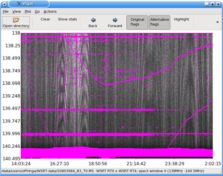
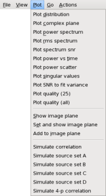
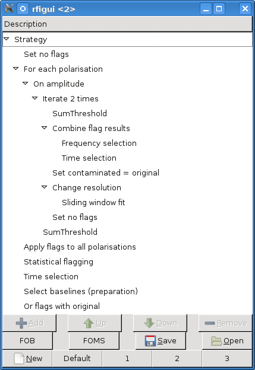

Offringa->RFI software->RFI gui tutorial
RFI GUI tutorial
Introduction
The GUI of the AOTools is aimed at analysing data of a single baseline
at a time. Especially for problems related to RFI, this should be a very
handy tool. The tool can do quite advanced data manipulation, but many
of the advanced tricks are undocumented and/or somewhat hidden in the
tool. The tool (including its documentation) is very much a work in progress.
This tutorial was written for the SVN version of 2011-01-21.
Starting the tool
Once you have installed the GUI, you should be able to start the GUI with
"rfigui". If you are running the GUI remotely on a different machine, make
sure you have your x server forwarded (either with ssh -X or ssh -Y depending
on Mac/Linux). On the LOFAR CEP cluster, you have to import the LofIm
environment with "use LofIm".

Opening a measurement set
After starting the GUI, the main window will appear (displayed on the
right), from which most actions will be performed. To start working,
open a measurement set. RFI gui has been written around the AIPS++/CASA
measurement set format (directories with extension .MS), and works best
with those formats. There is some limited
support for opening UV FITS files (extension .uvfits) and raw RTCP output
files (extension .raw).

To open a measurement set, select "Open directory" from the
"File" menu. For opening a uv fits or raw file, select "Open file" instead.
In general, RFI gui will never write changes to the measurement set;
all options in the menu will be executed in memory, with the exception
of custom made strategies.

After selecting your measurement set (abbrev. MS),
a pop-up window will appear (displayed on the right) with
settings for opening the set. In most cases, you'll want to keep the default
settings.
The settings are:
- Column: the column to read from the MS. "Residual" will subtract the
model data from the original data ("DATA" column).
- Polarisation: which polarisations to read. By default, will read four
polarisations. In RFI gui, the gui will always refer to the polarisations
as if they are orthogonal, thus as if XX, XY, YX and YY are in the set.
However, if the MS contains circular polarisations, the
XX polarisation will actually be LL, XY will be LR, etc. When data contains
four polarisation, the GUI will often visualize the Stokes I values by
calculating (XX + YY) (or (LL + RR) in the case of circular polarisation).
For flagging, it often matters little in which coordinate system the
polarisations are represented, as long as all information is being used.
- Indirect read options: Enables reordering of the measurement set,
as described on the Reading mode page.
Normally you don't want this, because it takes a long time to reorder the
entire set. Once reordered, it is much faster to read a single baseline.
Therefore, if you intent to look at many (/all) baselines in the
set, this is more efficient.
- Read UVW: Enables reading of the UVW values. Some custom strategy
actions need these. Since these values are not reordered, reading them might
take a little bit of time in indirect reading mode. When processing sets
with >1000 baselines, this might be as much as several seconds per baseline.
- Partitioning: Can split baselines into several pieces. Only works in
direct reading mode. Used to speed up reading so that smaller pieces at
a time can be inspected more quickly. Bit of an artifact of previous
issues, and not recommended to be used.
After you press the "Open" button, the set will be opened and the
first baseline in the set will be read. This might take some time.
Selecting a baseline
The first baseline in a MS set is often an autocorrelation. These have often
been flagged entirely by the observatory, and you might therefore see a
large purple window appear after opening a MS.
There are two options for going to a different baselines:
- 
Select "Go to..." from the "Go" menu. A window appears to select a baseline.
The image on the right shows how the "Go to" window might look like when
working with WSRT data.
By default, your current baseline will be
selected (versions < 2011-01-21 won't do this). Select your desired baseline
and press "Load" to load the baseline. Once again, that might take time.
- By pressing the toolbar "Next" and "Previous" you can iterate quickly over
baselines in the MS. The order in which will be iterated depends on the order
they are stored in the MS (to be more exactly; the order in which the first
time step has been stored in the set). Directly after loading a new set,
the status bar in the bottom will show the baseline (if you have not moved
with the mouse over the time frequency canvas).
The main window

Once the loading of the data is finished, you should see your baseline
in the main window, along with the axes: frequency will be displayed
vertically, time horizontally. To the right is the window displayed with a
WSRT measurement open.
If your set has already been flagged, you should see the flags marked
in fuchsia.
As you can see on the right, the WSRT set has been flagged already.
The "original flags" and "alternative flag" buttons turn respectively
the fuchsia and the yellow flag markings on and off. When a new baseline is
loaded, the yellow and fuchsia flags are the same, however, once you start
executing strategies, the yellow ("alternative") flags will show the flags
produced by the flagger.

The "plot" menu houses a lot of plotting operations, such as plotting
the distribution, the bandpass and time vs. amplitude. These options require
gnuplot, a pdf viewer and Ghostscript. If they don't work, check the
FAQ page on that issue. All options always operate
on the currently visible data. The plotting operations will also take
in account flags, and not use them to draw the graph if appropriate, if
marking of the flags is enabled (if both original and alternate flags are
displayed, they will be combined).
The plot menu also houses a quick imager, that will be described later.
Flagging & strategies
The purpose of the RFI gui is to quickly experiment with different
parameters and flagging algorithms. In this section, a quick overview to test
and alter the flagger will be given.
Assuming that a baseline has been loaded as described above,
a first try at flagging can be performed by selecting
"Execute strategy" from the "Actions" menu. A pop-up will appear and
show the progress. Note that, unlike the "RFI console" program,
execution of the default flagger will be performed in memory only: the MS
will not be changed (although, needless to say, it is generally a good practice
to have a backup of data which is being worked on). Flagging a single baseline
with the default strategy should be quick; less than a second with a few
hundred time steps and channels, or in the order of tens of seconds when e.g.
flagging thousands of time steps x 256 channels (which is common in
LOFAR observations).
Once the strategy is finished, the "Alternative flags" button controls
the visibility of the flags produced by the strategy. You might want to turn
the "Original flags" button off, as these will be drawn on top of the
alternative flags, and might occlude them.
A flagging algorithm is composed of a collection
of actions which together form what is called a "strategy", which is
comparable to a script in a programming language.
Actions can have parameters
that tune the flagger. For example; one action tries to subtract the celestial
signal and passband by smoothing the data. This action has parameters to
alter the way and the strength of the smoothing action.

The default strategy is optimized to be quick and accurate, and has
been toroughly tested on LOFAR and WSRT data as well as using
simulations. However, certain observations might
still produce less satisfying results, for example when a telescope
with a steeper passband is used and the fitter is too constrained, or when
a celestial source produces strong fringes due to antenna sidelobes,
and are being considered as RFI. Below I will describe some things which
you can try to optimize the strategy for your situation.
To see and edit the strategy, go to the Actions menu in the main window
and select "Edit strategy". A window similar to the picture on the right
will appear. The largest space will be taken by the various actions,
displayed hierarchically. In the root is "Strategy", which represents the
starting point of execution. Below the strategy window are three rows of
buttons. The first rows are used for editting the strategy, the second row
handles file actions (save and open of a strategy) and the third row loads
a new or default strategies. By clicking on an action, the parameters of the
action appear (i.e., if the action has any). The hierarchical displayment
allows grouping; e.g., the "For each polarisation" action iterates over all
polarisations and execute its children once for each polarisation. Then,
it combines the results of all runs and changes the three copies accordingly.
Internally, the strategy will keep three copies of the data in memory.
These are referred to as "Original", "Revised" and "Contaminated". Most
actions are applied on the "Contaminated" data, while the "Revised" is being
used for storing the background fit. Finally, the "Original" image is kept
to be able to restore any changes, e.g. after an iteration. Currently,
it is not well documented what actions exactly do, which hopefully will
become more clear in the future.
Adding an action
To add a new action:
- Select the node which is going to be its parent. This parent should be
a "container" node, that is, be able to have children nodes. If this is
not the case, the "Add" button will be greyed out.
- Press the Add button. A long menu appears on the right with all the actions
available.
- Select the right action.
- The new action will be selected. You might want to change its position
inside the parent by pressing the Up and Down buttons.
The default strategy
The image of the edit window on the right shows the current default strategy (which is subject
to change...). The strategy is explained in the article
A LOFAR RFI detection pipeline and
its first results (Offringa et al., 2010), which I refer to for a general
understanding. The "Default" button resets the strategy. The "1", "2" and "3"
buttons load the Default strategy encapsulated in a "For each baseline"
action, including a "Write flags" action. This corresponds with the "quick",
"default" and "best" strategies creatable by the "rfistrategy" binary, which
are equal at present (we found that the best and quick strategies were almost
equal qua performance, while the accuracy was considerably better, hence
took that as default for all). If you load one of the 1,2,3 strategies and
execute it, you would flag (and write those flags to..!) your whole set.
Here is a summary of the individual actions:
- Set no flags: removes the flags in the Contaminated data.
- For each polarisation iterates over selected polarisations
and executes all children for the selected polarisations. The result of the
children will be combined and returned, if possible.
- On amplitude: is a "For each complex component" action. Executes
all children by iterating over certain complex derivations and will
combine the results if possible. Possibilities are execution on
amplitude, phase, real and imaginary values. In the default pipeline, only the
amplitude value is used. Note that if subtasks alter the amplitude values,
this task cannot change this back into real and imaginary values.
Nevertheless, it is often useful to see what the background fit has done,
which can be seen by selecting the "Restore from amplitude" checkbox (do not
forget to "Apply" the changes). The "background" toolbar button on the
mainwindow will then show you the fitted background after the strategy
has been executed. Very useful for analysis.
- Iterate 2 times: is an iteration action. Executes its children
a number of times. Will also change the threshold sensitivity
exponentially, which can be controlled by its parameters. When accuracy
is not good enough, it might help to increase the number of iterations. While
it takes more time, the output should be more stable.
- SumThreshold: performs the SumThreshold algorithm to flag samples.
The result is stored in the Contaminated data. The method has been introduced
and tested in the article
Post-correlation radio frequency interference classification methods
(Offringa et al., 2010), and has since proven to be very accurate.
It has an important parameter: its base sensitivity. If you see too few
flags, increase its sensitivity (by lowering the number), if you see too many
flags, lower its sensitivity (by increasing the number).
- Combine flag results: runs its children one by one and "ors"
together all flags (in this case, the frequency and time selection are
executed one after one other and then combined.
The difference with just running the selections after each other without
combining the flags, is that they will both be presented the flags
that are produced by the SumThreshold, and the Time selection will not
be presented the flags of the Frequency selection.
- Time selection: selects times which have an acceptable RMS,
compared to its neighbours and flags the other.
- Frequency selection: equal to time selection, but then in
frequency.
- Set contaminated=original: will revert any changes being done
to the contaminated data (but not change its flags). In the default
strategy, this is used to iteratively get a better fit to the data. First,
a very rough threshold is done, then a first fit while ignoring flagged data,
then a better threshold and a better fit, etc.
- Change resolution: downscales the images, then executes its
children and then upscales the result. Scaling is done by nearest
neighbour interpolation; not so accurate, but very fast. The reason for it
being in the default pipeline, is to increase performance. The sliding window
fit operation is one of the slowest operations. By performing it on a
low resolution, the speed is significantly increased. If your measurement
set has strong, fast fringes, it might be helpful to set the resolution change
factors to "1" (i.e., no change). The kernel in the sliding window fit
action is currently set in number of samples, which implies that the total
size of the kernel is multiplied by the scale factor.
- Sliding window fit: smoothes the "Contaminated data", stores
the result in the "Revised data" and the difference in "Contaminated data".
Keep in mind that the "Change resolution" action also effect the size of the
kernels (see above). You can analyse the fitted background in the GUI by
making sure that the "On amplitude" action saves the background (select
its "Restore amplitudes" checkbox).
- Apply flags to all polarisations: if a sample is flagged
in one polarisation, will flag all polarisations.
- Statistical flagging: somewhat of a bad name for what its
purpose became, this action flags samples that are close to large areas of
flags. It's described in A LOFAR
RFI pipeline and its first results, where it is called a
"density dillution".
- Select baselines: assembles statistics on baselines. Needs a
second action to output the baselines, which by default is added by
RFI console.
- Or flags with original: If flags exist in the MS, this action will
keep those flags. If you want to "start over" and remove existing flags,
remove this action. Note that if the set contains flags and this action
exists, the yellow output flags will be a combination of the fuchsia input
flags and the flagging result.
Be sure to read the strategy
optimization example. There is also an item in the
FAQ on what can be tried
to solve certain issues. Do not forget to press the "Apply" button after
changing parameters. If you forget this, the changes are not saved,
and RFI gui will not warn you about it.
Executing a strategy in RFI console
It is possible to export a strategy from the GUI and execute it in RFI
console, in order to quickly flag multiple sets with the same strategy. This
is also handy when you want to flag the data on a different (faster :))
machine, or when you do not want to use the GUI for the actual flagging.
In order to do so, create a strategy that satisfactory flags a single
baseline. Then, click the "FOB" button, which will add a "for each baseline"
at the root of the strategy. You might want to change some of its parameters.
Then, add a "Write flags" action as the last action of the For Each Baseline
action, so that the results are actually written. Now, your strategy is
ready to be executed on the entire set. You can "Save" the strategy and use it
in RFI console (but you can also run it in RFI gui).
Vice versa, you can also load a Strategy created by the RFI strategy
program, possibly to understand how the default strategies operate -- but be
aware that those strategies write their changes.
Imaging capabilities
Imaging of the currently selected
data can be done with "Set and show image plan" in the Plot menu. A window
appears where you can switch between the UV plane and the imaging plane. This
action is actually a short cut for four actions: (1) pressing
"Show image plane"; (2) pressing "Clear" in the image plane;
(3) pressing "Add to image plane" in the Plot menu of the main window; and (4)
pressing "Apply weights" in the image window. The first action is trivial,
the others will be described below.
- The clear button in the image plane window sets the current image to
zero and sets the currently associated weights to zero.
- The apply weights button in the image plane window divides each pixel
in the currently constructed uv plane
by the number of a sample was gridded on that pixel (updating both the
UV plane and the image plane). Until you have pressed this button, the image
plane is not always shown. Once you have pressed this button, you should
not add new data to the uv plane, as you would weight this new data
different then the previously added data.
- The "Add to image plane" menu item on the main window will grid and add
the currently visible data to the uv plane, and update the weights
accordingly. By adding several baselines, you would add more and more data to
the UV plane, hence improve the image.
If you would add all baselines in your MS one by one, you would
have manually imaged your observation much like a normal imager would
do. You can actually create a strategy that does that (a "For each baseline"
action with an "Image" action).
The image window has a lot of buttons with undocumented abbreviations on
them. They are:
- x1/4, x1/2, x1, x2, ... x128: these buttons Clear the current data and
weights and change scaling of (new) data in the UV plane. It is not so much
meant as having accurate units, therefore you have to experiment which
scaling will give you a good sampling of the uv plane (the uv tracks should
be visible and preferably not be too small). With WSRT LFFE data (150 MHz), the
longest baseline of 2,7 km is quite nicely shown with a scaling of 4x.
Remember that zooming in on the UV plane means zooming out on the image plane.
- R: redraw the current image in the imager
- MS: the MS button ("Memory store") stores the image currently being
shown in memory
- MR: draw the image that has been stored in memory. By clicking "R"
and "MR" after each other, you can compare the stored image with the current
image quickly.
- Mx: multiply the current image with the image in memory
- M-: Show memory minus current
- sqrt: Display the square root of the visible data. The negative values
(displayed in red) will be calculated as -sqrt(-data), hence remain negative.
- S: (toggle button) keep the scale constant. Will not change the color scale
when new data is shown, hence can make comparing easier.
- H/V: horizontal/vertical graph, experimental options.
- AT: angular transformation, experimental option.